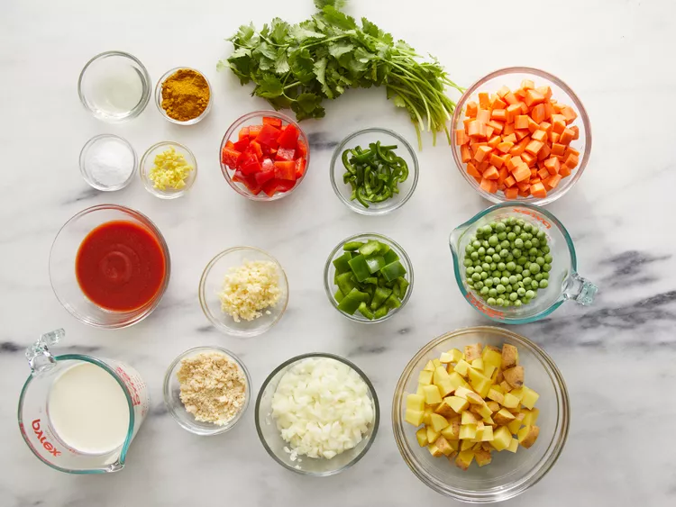
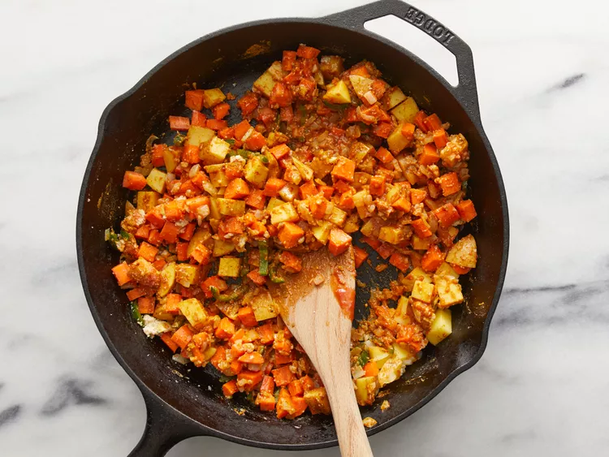

Vegetarian Korma

A rich, creamy vegetable curry with a blend of aromatic spices and cashew nuts.
Ingredients
- 1½ tablespoons vegetable oil
- 1 small onion, diced
- 4 cloves garlic, minced
- 1 teaspoon minced fresh ginger root
- 4 carrots, cubed
- 2 potatoes, cubed
- 1 (4 ounce) can tomato sauce
- 3 tablespoons ground unsalted cashews
- 1 fresh jalapeno pepper, seeded and sliced
- 1½ tablespoons curry powder
- 2 teaspoons salt
- 1 cup heavy cream
- 1 cup frozen green peas
- ½ green bell pepper, chopped
- ½ red bell pepper, chopped
- Fresh cilantro for garnish
Instructions
- Gather all ingredients. 
- Heat oil in a skillet over medium heat. Add onion and cook until tender, about 2-3 minutes. Add garlic and ginger; cook for 1 minute until fragrant.
- Stir in carrots, potatoes, tomato sauce, cashews, and jalapeño. Season with curry powder and salt. Cook until potatoes are tender, about 10 minutes. 
- Add cream, peas, and bell peppers. Reduce heat to low, cover, and simmer for 10 minutes. Garnish with cilantro to serve.